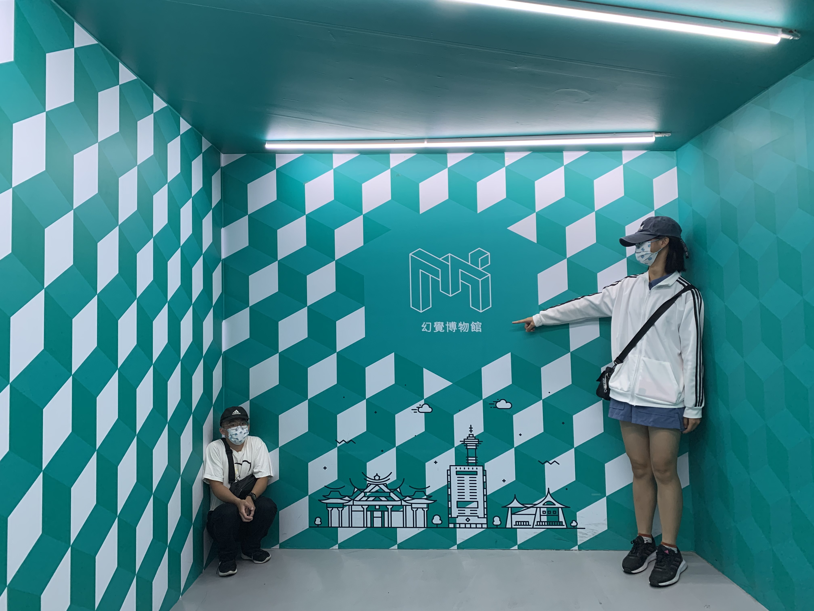
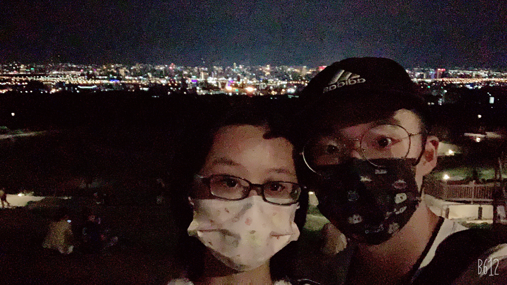
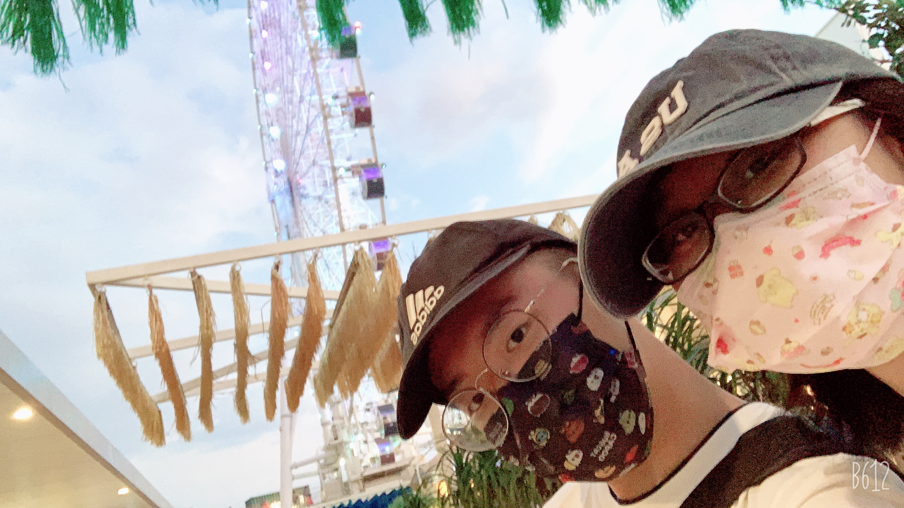

September 3 2021
幻覺博物館
在這個難得的三天兩夜台中行，首先來到了幻覺博物館，之前就有在網路上看到，感覺是一個很奇特的地方，本來覺得票價不便宜，不過看他在全球二十多個城市都有據點，評價也不錯，還是把它加進行程了，當天我們來的算早，是第二組進場的客人，他們一共有三層，每一層都會有工作人員協助導覽，這裡的作品主要想向我們傳達「眼睛看到的一切都是幻覺」，像以下的這張照片，在這個空間它設計成右邊的人看起來比左邊的人大很多，主要是這房間有前後左右的高低差而造成這種錯覺，還挺有趣的，再下面的影片很適合用慢動作來拍，效果特別好，用了幾面鏡子製造出這種效果，全部這樣逛完覺得很值得了。
更多照片在這

September 4 2021
望高寮夜景公園
第二天的行程就以台中大肚山的望高寮夜景公園來做結尾，之前台中市的建設局才斥資千萬優化這公園的環境，我剛好在這時候來到這，停車也很方便，也吸引了不少的遊客，剛走上來真的有驚艷到，感覺之前看過的夜景都弱掉了，這個才叫夜景嘛，主要是這個地方夠寬廣，可以把整個台中盡收眼底，在這裡草皮上坐著滿滿都是攜伴來看夜景的人，當然我也不例外，這裡真的會讓人想一直待下去，我們也在這坐了將近一小時，才依依不捨的離開。
更多照片在這

September 5 2021
台中三井 OUT LET
來到台中就是要來逛逛三井outlet，還有他那可以看海景的摩天輪，我來到這最大的目的就是這個，逛街只是其次，不過為了等到晚上�再去搭摩天輪，我們也是逛了一個下午，等晚上坐完摩天輪我們才結束了這次的台中行。
更多照片在這
